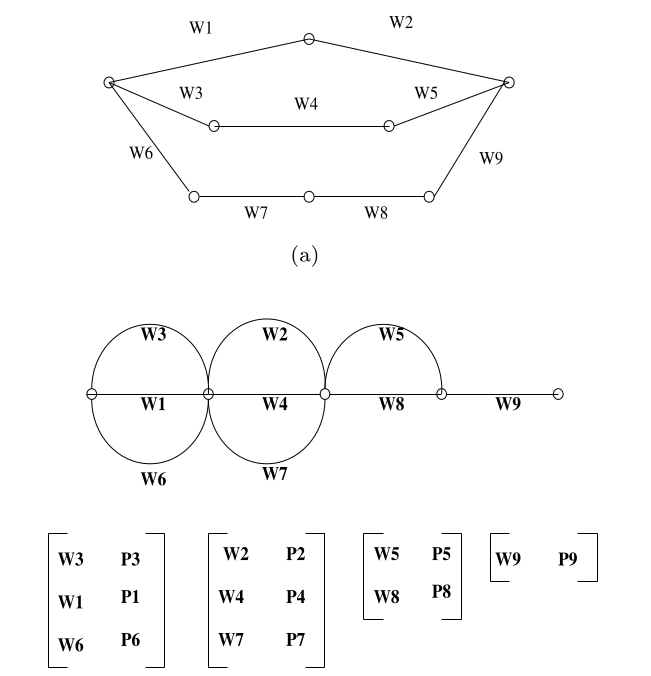
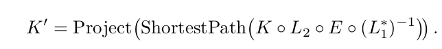

语音关键词检索简介
1 什么是关键词检索
语音关键词检索是什么？英文的表述有Keyword Spotting，Spoken Term Detection，Keyword Search。它的含义是，从一个语料库中寻找到我需要的词的位置的方法。方法可以给一个词（以文字的形式），或者给一个语音片断，然后系统找出在哪一个语料的哪一个时间段出现过这句话。
当前这个领域面临的一些挑战主要是：对于检索速率和准确度，如何去提升；针对语音变形，比如说有口音，有背景噪声的情况下，如何处理；当语料资源不足的时候，要怎么去构建系统。针对这些挑战，领域内也有很多相应的解决方法。
当系统构建完成之后，要通过一定的指标来确定这个系统是否可行。常见的指标有准确率，召回率，漏报率，虚警率，这些指标和机器学习领域如出一辙。当漏报率和虚警率一致的时候，就是这个系统工作得最好的时候。
2 各种方法与原理
2.1 早期的方法
最早的时候，关键词检索是基于DTW算法构建的。这里需要对所有的非关键词进行建模：一个由关键词模型和一个补白模型（垃圾模型）构成的并行系统。关键词通过关键词模型有一个得分，通过补白模型有一个得分。训练的目的就是使得前者的得分变高，后者的得分尽量低。这个系统有一个显而易见的缺点：对于每一个关键词都需要建立模型，不适合移植。而且关键词表比较大的时候，系统的性能会大幅度下降。针对少量关键词的场景，这个方法的想法还是值得借鉴的，但当我们需要在大规模语音识别系统进行检索的任务的时候，更常用的方法是下面，基于LVCSR的检索方式。
2.2 基于LVCSR系统
LVCSR系统，即大规模词表连续语音识别，可以将连续的语音转换成相应的文字。系统在识别语音的时候会生成lattice，然后在lattice中寻找最优路径，这个最优路径就是语音识别的结果。但是，这个识别出来的结果只是一个1-best的结果，而有时候，关键词可能就潜藏在其他可能的路径上。为了把这些潜藏的结果也找出来，我们就要在lattice上进行检索。这个也是当前大规模识别寻找关键词的主流方法。
系统生成的lattice可能非常冗杂，这里可以考虑使用混淆矩阵，将lattice变得更加紧凑。下面的图就展示了如何将原本的lattice转换成混淆网络。

2.3 基于subword系统
语音识别的lattice是一般是基于词的，这有一个弊端，就是无法解决OOV的问题。我们需要检索字典不存在的词的时候，之前的系统就无法正常检索了。这里，我们可以将词进行切分，切成更小的音素，音节等等。之后，便可以在基于这些子词的lattice上进行检索。
2.4 基于WFST系统
如何在lattice上进行有效率的检索，这是一个很好的问题。使用顺序检索明显是很低效率的方法。我们可以将问题转换得更抽象一点：关键词检索是序列中寻找词的过程。序列到结果的问题，可以考虑引入WFST。我们可以构建一个索引，将结果的后验概率值，词的时间起点，词的时间终点，三个信息放在权重上。这个转移上的符号，被称之为时间因子。引入WFST进行索引构建，主要的工作便是这个因子的构成。最后，将要检索的关键词合并到索引当中然后进行优化，排序，就能够找到关键词的相应位置和权重值。
关于这个WFST的构建，可以参考这一篇论文：Lattice Indexing for Spoken Term Detection。
2.5 基于WFST的OOV检索
OOV的检索和普通词的检索差别在对于关键词的处理上。我们无法直接将OOV直接合并到索引中进行检索，这时候，需要用另一种方式进行词的自动机构建。我们可以通过下面的方法进行关键词自动机的构建：构建音素混淆矩阵，利用G2P模型构建OOV的lexicon，然后再加上原本的lexicon，结果全部合并起来。这样做可以得到一个从OOV到可能的lexicon的映射。这也就相当于，有了这个词的发音，系统可以找到其他发音相近的词。合并的公式如下所示：

2.6 传统的方法的分支
上面的方法主要针对的是大规模关键词检索的任务，或者说，已经有文本（text）的任务。但是有时候，我们需要检索的是一个更加复杂的情况。随便说一个词，获得一个语音片段，这个词在语料库中存在，但是识别解码器可能并不能准确识别出这个词，那么检索就会发生问题，那怎么办？这时候，要回到最初的方法，DTW。DTW有各种变种，常见的是对匹配细节的一些处理，对信号表示的一些处理，对模板选择的处理等等。典型的有Segmental DTW：它用Posteriogram来代替原本的MFCC进行路径寻找；设置一个R值，让语音的时长差异控制在一个范围之类；它会变换起点，寻找到匹配最好的一个区域，等等。
以上是关于关键词检索的理论的介绍，如果想要深入继续了解，可以参考相应的论文。
3 基于WFST的检索方法实践
下面就配合脚本，对Kaldi中实现的关键词检索系统进行一个简单的介绍。Kaldi中实现的关键词检索系统是基于LVCSR系统和WFST实现的。意思就是说，我们需要有一个完整的语音识别系统，或者，至少有系统生成的lattice和其他words.txt, lexicon等文件。因为这里的检索就是基于lattice实现的。
Kaldi在示例当中有一个Babel系统，是关键词检索相关的。在Babel系统当中，关键词检索的脚本都比较复杂，而且脚本和数据本身配合非常紧密。如果很难获取到Babel指定的数据，那些脚本很难跑下来。在这里我就分享一下我自己写的一些简单脚本的片段。如果您已经拥有了一个比较好的语音识别系统，您可以参考一下下面的脚本，简单拼接一下就可以完成关键词检索的任务了。
下面主要分了三个部分，分别是三个脚本的片段。三个片段分别关于基本的检索，基于子词的检索和对OOV的检索（OOV的意思是集外词，意思是在训练的字典当中不存在的词）。片段中会有一些简单的注释方便理解。
3.1 基本检索
基本的检索脚本如下所示，整个流程的相关信息写在注释当中。1
2
3
4
5
6
7
8
9
10
11
12
13
14
15
16
17
18
19
20
21
22
23
24
25
26
27
28
29
30
31
32
33
34
35
36
37
38
39
40
41
42
43
44
45
46
47
48
49# 一些路径的配置
lang_dir=data/lang
data_dir=data/dev2h
decode_dir=exp/chain_cleaned/tdnn1f_sp_bi/decode_dev2h
kws_dir=data/kws.oov
kws_work_dir=kws_oov
stage=0
# 获取检索语音的时长
duration=`feat-to-len scp:data/dev2h/feats.scp ark,t:- | awk '{x+=$2} END{print x/100;}'`
if [ $stage -le 0 ]; then
# 通过数据生成相应的检索词表
local/generate_example_kws.sh $data_dir $kws_dir
fi
if [ $stage -le 1 ]; then
# 进行关键词检索的数据准备，这一步需要先自行准备kwlist.xml文件，这也是唯一需要手动准备的文件。这个文件格式可以参考Kaldi官网。
local/kws_data_prep.sh $lang_dir $data_dir $kws_dir
fi
if [ $stage -le 2 ]; then
# 生成关键词检索索引，这里的decode文件夹需要有语音识别生成的lattice
steps/make_index.sh --cmd "$decode_cmd" --acwt 0.1 \
$kws_dir $lang_dir \
$decode_dir \
$decode_dir/$kws_work_dir
fi
if [ $stage -le 3 ]; then
# 在索引中进行检索
steps/search_index.sh --cmd "$decode_cmd" \
$kws_dir \
$decode_dir/$kws_work_dir
fi
if [ $stage -le 4 ]; then
# 将生成的结果写入文件kwslist.xml当中
mkdir $decode_dir/kws/folder_result
cp $decode_dir/kws/result* $decode_dir/kws/folder_result
gzip -d $decode_dir/kws/folder_result/*
cat $decode_dir/$kws_work_dir/folder_result/result.* | \
utils/write_kwslist.pl --flen=0.01 --duration=$duration \
--normalize=true --map-utter=$kws_dir/utter_id \
- $decode_dir/$kws_work_dir/kwslist.xml
fi
echo "Done."
3.2 OOV检索
上面我们已经简单介绍了基于OOV的检索的基本原理，脚本非常清晰展现了每一个步骤，要点也已经写在注释中。
1 | # 生成混淆矩阵E，注意，这里需要的脚本最好是Babel系统s5c的脚本。s5d的脚本是跑不通的... |
3.3 基于Sub-word检索
基于子词的关键词检索系统主要分为两种，一种是基于phone的，一种是基于syllable的。基于phone的关键词检索是基于syllable检索的一种特殊情况。可以理解为phone是粒度比较小的syllable。
需要注意的是，在下面生成完基于子词的lattice和语言模型之后，词汇是发生了完全的改变的了。我们有一个一个新的词汇表，那就是子词的词汇表。在进行关键词检索数据准备的时候，只需要把要检索的子词序列（一个词分解开的）写入相应的xml节点当中即可。在网上很少涉及基于子词的数据准备，这里提一下。
1 | # 进行路径配置 |